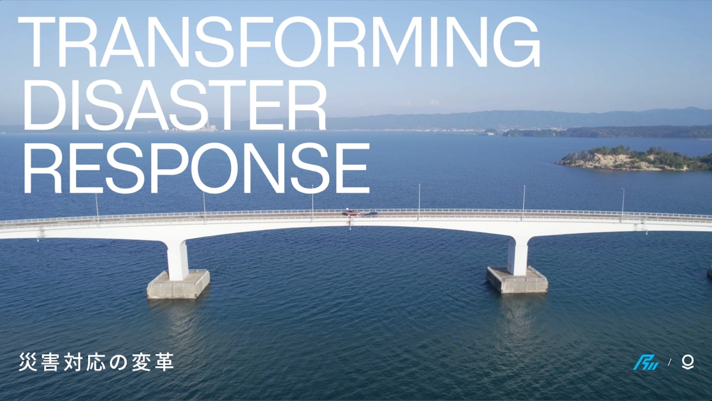
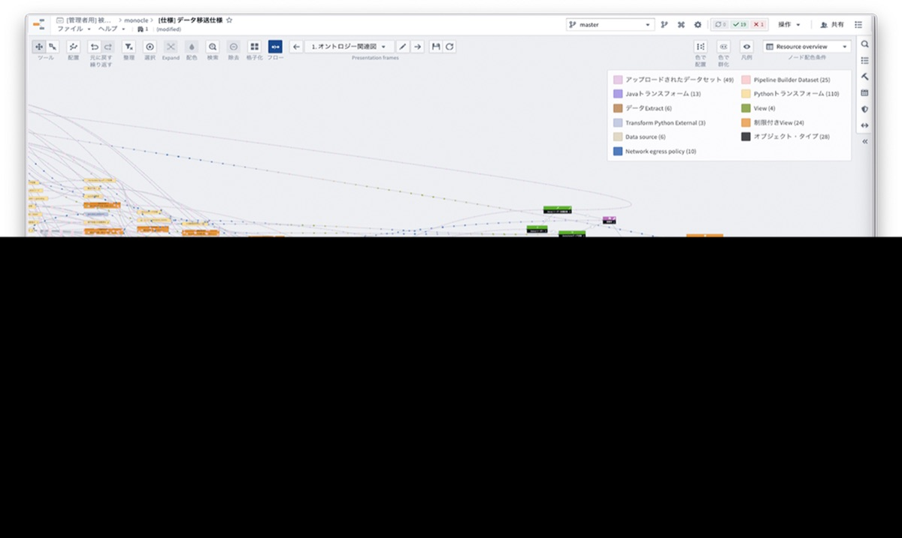
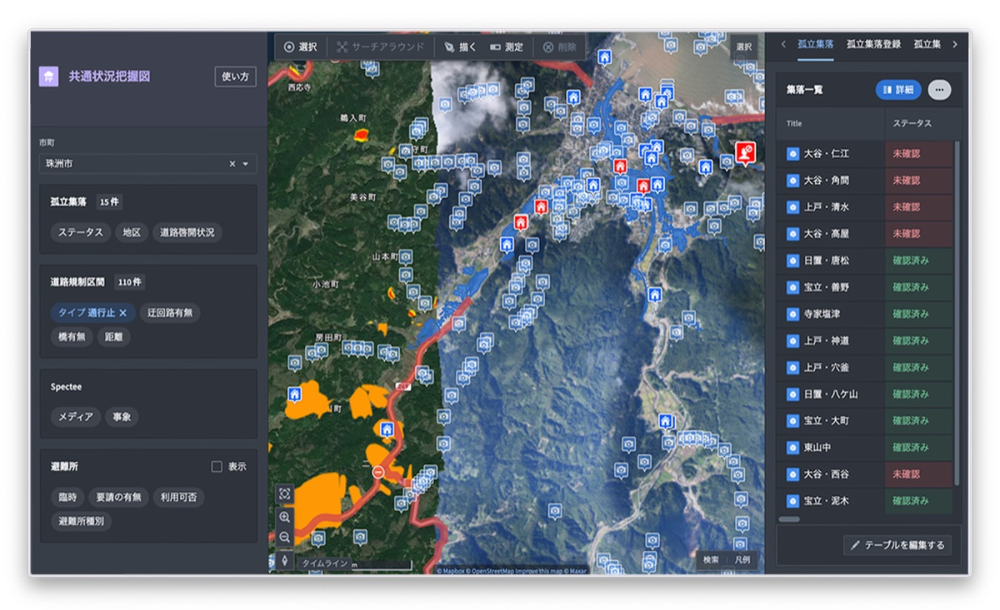
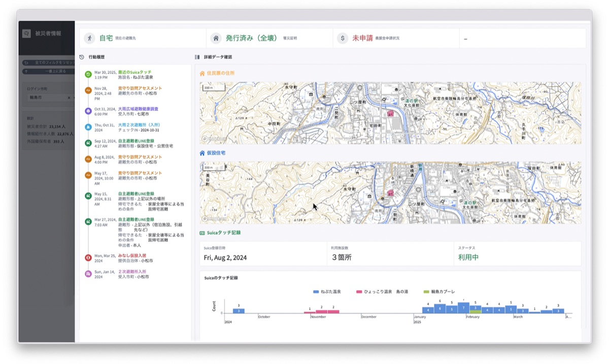

能登半岛地震
部署先进的数据集成技术，助力灾害响应工作。

解决方案
Palantir 迅速确立了四个核心目标：
提升灾害响应与救援工作的效率和效果。
开发避难人员管理的标准化数据模型。
协助联合特遣部队优化灾民支援行动的优先级排序。
促进各市町村在避难人员管理方面的无缝协作。
在 7 周内，Palantir 工程师交付了：
灾民数据库
灾民数据库于 2024 年 2 月 24 日上线，集成了多种数据源，包括县政系统、LINE 应用数据以及非营利组织（NPO）的外部系统。该平台使相关部门能够高效追踪避难人员的位置和需求。
灾民数据库在追踪和援助地震后选择自行避难的居民方面发挥了尤为突出的作用。

通用作战图（COP）
针对随后发生的 2024 年能登半岛暴雨灾害，Palantir 将环境数据（如路障、滑坡、卫星图像）与村落位置数据相融合，开发了通用作战图（COP）。联合特遣部队利用该工具来优化灾民支援行动的优先级排序。
COP 使各市町村和支援组织能够快速且安全地共享信息，确保各方都能获取所需的相关数据。

动态避难人员追踪与管理
Palantir 集成了内部系统与外部服务的数据，构建了一套动态访问控制系统，用于管理跨市町村移动的避难人员。该系统确保避难人员获得必要的援助，同时避免服务保障出现断档。

“灾民 360”系统通过集成 15 个数据源而构建，能够提供灾民的最新信息。该系统在确保个人数据安全的前提下，在灾害期间的信息汇聚与提供方面发挥了革命性的作用。
具体而言，Palantir 与个人信息保护委员会合作，依法实施了严格的访问控制，并部署了可根据灾民位置动态调整访问权限的功能。
影响
Palantir 的介入显著提升了日本的灾害响应能力：
优化决策：
灾民数据库和 COP 赋能相关部门迅速做出明智决策，缩短响应时间并优化资源配置。
标准化数据管理：
与内阁府的合作推动了未来灾害响应的全国标准化数据模型的开发，确保各地区的操作一致性与高效性。
强化协作：
动态避难人员管理系统促进了各市町村之间的协同配合，保障了对避难人员的全面支持。
快速响应：
灾民数据模型可复用于其他项目。例如，在 2024 年 9 月能登半岛暴雨期间，相关部门在 24 小时内就构建了一款支持救灾的应用程序，彰显了该模型的灵活性与有效性。